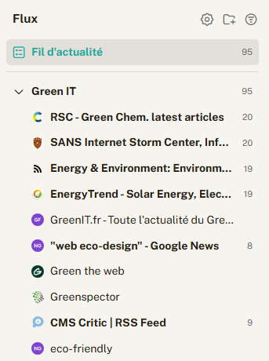
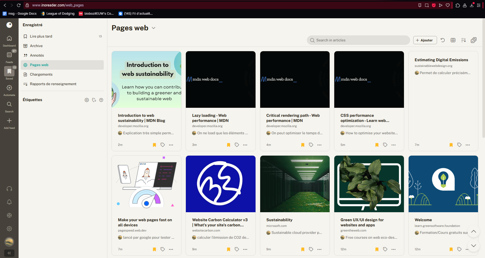
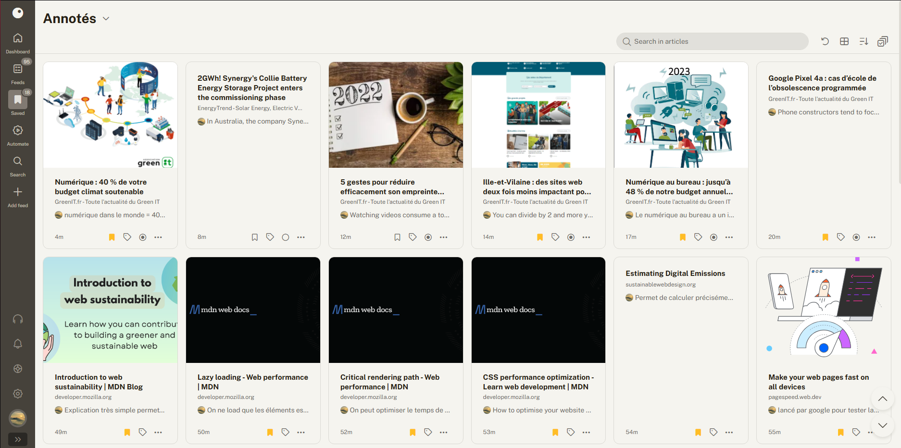
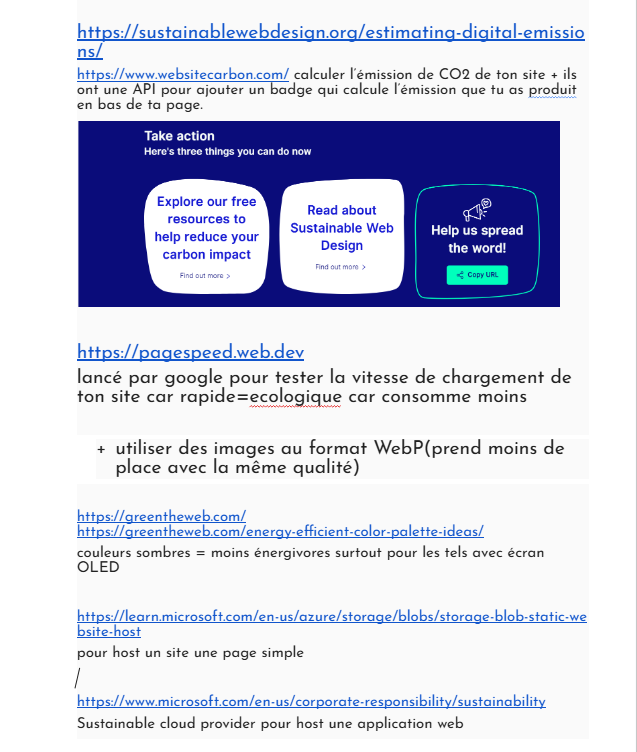
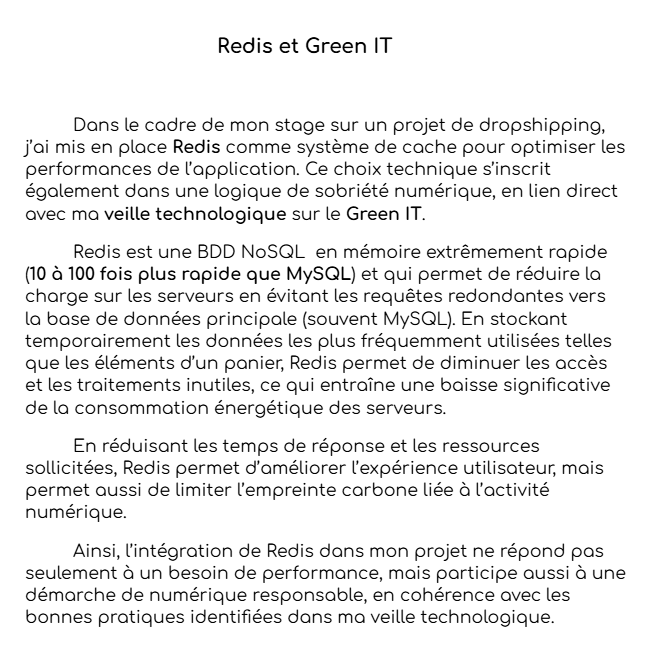

Veille Technologique
Résumé de ma veille Green IT
üå± Veille technologique : Green IT & √âco-conception Web
Pourquoi j'ai choisi Inoreader ?
J'ai utilisé Inoreader pour effectuer ma veille car c'est un outil freemium efficace qui permet de :
- Suivre des flux RSS spécialisés (MDN, GreenIT.fr, Sustainable Web Design...)
- Ajouter directement des sites à surveiller
- Organiser les articles par dossiers, tags et dates
Cela m’a permis de centraliser et structurer toutes les informations utiles autour du Green IT.
Ce que j'ai retenu
Le Green IT ne concerne pas uniquement les infrastructures : en tant que développeur web, on peut agir à plusieurs niveaux :
- üé® C√¥t√© front-end : optimiser l'interface (UX/UI), all√©ger le DOM, charger les ressources intelligemment (lazy loading, images WebP...)
- ☁️ Côté hébergement : choisir des services cloud éco-responsables (Azure, WebsiteCarbon, Green Software Foundation...)
- üìä Mesurer l‚Äôimpact de ses choix : via des outils comme WebsiteCarbon ou PageSpeed Insights




